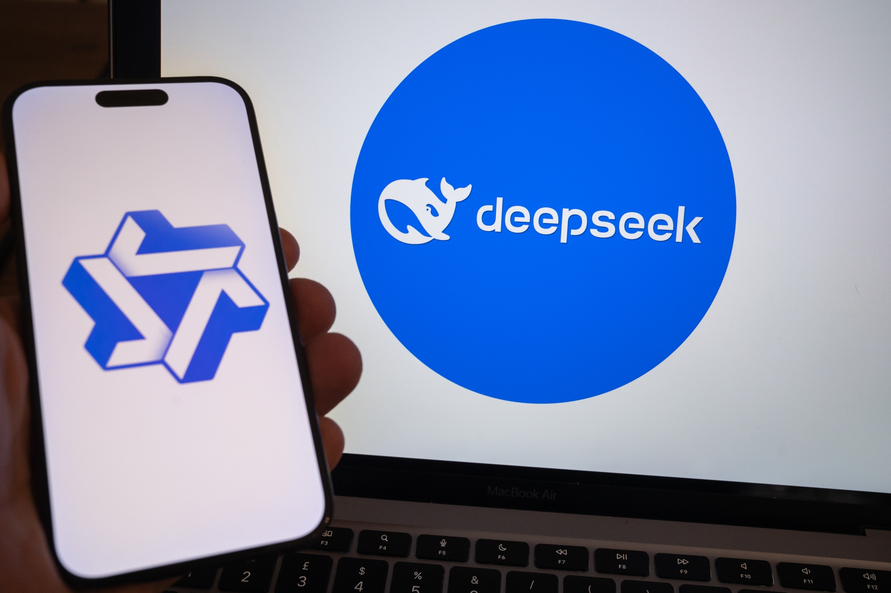

01【壮絶】ウコンに代わる「酒飲みを支える菌」を事業化した男
発行日時：2026年10月22日 05:30:00 JST
あなたに関係ありそうな理由
既存の大手企業で、新しい技術を事業化するまでに必要な社内合意、粘り強い実験、販売方法づくりが見えます。短期の収益と長期の芽をどう両立させるかを考える材料になります。
概要
キユーピーが「よいとき」の名前で販売するサプリメントには、酢をつくる過程で見つかった酢酸菌が使われている。記事は、ウコンなどの定番商品に代わるものを探していたのではなく、既存事業の外に新しい柱をつくろうとした社員・奥山氏の提案から始まった開発を追う。奥山氏は11年かけて社内で可能性を探り、2013年に事業化が認められた後も、商品発売までさらに3年を要した。技術の発見だけでなく、社内で継続する理由を示し、製造と販売の形を整えることが必要だった。
大きな壁は生産コストだった。初期の試算では1カプセルあたり5,000〜1万円となり、一般向けの商品として成立しにくかった。そこで高密度発酵の方法を開発し、コストを約100円まで下げた。途中では事業を取りやめる案も何度も出たが、経営陣の一人がもう一度機会を与えたという。発売時には通信販売だけでなく、新宿での試飲・サンプリングも行い、商品を知ってもらう接点をつくった。研究と製造の課題を解いた後に、顧客へ届ける手順まで組み立てた点が、記事の中心にある。
記事によると、2026年度の売上高は約20億円を見込み、2030年代前半には100億円を目指す。キユーピーは社外の企業約50社とも連携している。単品のヒットを狙うだけでなく、菌の研究や商品化の知見を別の事業へ広げる考えだ。売上目標は今後の計画であり、達成済みの数字ではない。研究成果を事業の継続に結びつけるには、品質管理、製造能力、販売先の確保、顧客への説明を並行して整える必要がある。
表示コメントでは、商品化まで長くかかったことを新規事業の現実として受け止める声や、挑戦を支えた経営判断への注目が見られた。一方で、コメントには研究データが動物試験中心なのか、人で確認されたものなのかを問う論点もある。記事の成果紹介と、健康への効果がどこまで確認されているかは分けて理解したい。今後は、目標とする売上に近づくかだけでなく、連携企業や新商品の数、根拠の示し方、利用者が選ぶ理由をどうつくるかが焦点になる。このプロジェクトでは研究担当者だけでなく、製造や販売の部門、社外の協力先も役割を持つ。長期開発を個人の熱意だけに頼らず、経営判断として引き継げるかも見どころだ。
仕事や会話で使える一言
「技術の発見から販売まで、途中で止めない仕組みをどうつくったのかが参考になりますね。」
NewsPicks原文を読む
02【文学賞受賞】AIを使う小説家は何を考えているのか
発行日時：2026年10月22日 05:30:01 JST
あなたに関係ありそうな理由
生成AIを使う際に、発想、作業、最終判断をどう分けるかを考える題材です。AIに任せる仕事を明確にしながら、本人の経験や独自の視点を成果物に残す方法が見えてきます。
概要
星新一賞の受賞経験を持つ小説家、葦沢かもめ氏は、生成AIを執筆に取り入れている。2022年の受賞作「あなたはそこにいますか？」は、AIとの共作をめぐる議論を呼んだ。記事が紹介する2026年の同賞では、一般部門の受賞者4人のうち3人がAIを利用していた。AIの使用が珍しい実験から創作手段の一つへ広がる一方で、「誰が書いたのか」「どこまでを作者の仕事と呼ぶのか」という問いは残っている。
葦沢氏は大学時代からGPT-2などを試し、AIを使うために自分の小説の書き方を分析してきた。現在はClaude Codeに、自分が考える手順や判断の観点をスキルとしてまとめている。まずアイデアを探し、世界観や登場人物を決め、筋書きを組み立て、文章へ進む。工程を分けることで、AIに一度に完成稿を出させるのではなく、各段階で人が選択や修正を加えられる。創作の方法を言葉にして機械へ渡す作業自体が、本人にとって自分の発想の癖を知る機会にもなっている。
AIは案や文章を出せるが、矛盾の修正、伏線の配置、読者に届けたい感情の判断は人が行う。葦沢氏は、AIに任せて終わりにせず、出力を何度も読み直し、自分の経験や関心のあるニッチな題材を足していく。人間が引き受ける部分は、文章を打つ作業だけではない。何を題材にし、どの案を選び、どの違和感を直すかという編集の判断が作品を形づくる。記事は、執筆を「思考を組み立てる仕事」と捉え直す見方を示している。
表示コメントでは、作品の発想や文章の生成にAIが関わっても、選択と推敲を行う人の役割が残るという意見がある一方、AIを使ったと聞くことで作者の声が見えにくくなるという懸念も出ている。作者は、AIが出しにくいニッチな題材や自分の経験に根ざす視点を重ね、作品固有の表現へ近づける。作業の効率化と表現の均質化をどう両立させるかは、読み手にも問われる。受賞作にAIが使われたという事実だけで、作品の質や作者性を判断することはできない。どの工程をAIに任せ、どの判断を作者が担ったのかを具体的に見ることが大切だ。AIの利用を隠すか明かすか、創作の記録をどこまで示すかも、読者との信頼に関わる論点になっている。
仕事や会話で使える一言
「AIに何を作らせるかと同じくらい、最後に人が何を選び直すかが大事ですね。」
NewsPicks原文を読む
03中国DeepSeek、2兆円超を調達－OpenAIなどグローバル大手を追い上げ
発行日時：2026年10月22日 12:12:21 JST

あなたに関係ありそうな理由
生成AIの競争が、モデルの性能だけでなく、計算設備、資金調達、投資回収を含む産業競争になっていることが分かります。AI導入や関連企業を見る際の財務面の確認軸になります。
概要
中国のAI企業DeepSeekが、評価額1,000億元を基準にした資金調達を検討しているとBloombergが報じた。円換算では約2兆3,500億円に当たる規模で、当初の500億元から800億元、さらに1,000億元へと目標が引き上げられた。大規模な計算資源を確保し、OpenAIなど米国の大手に対抗するための資金を集める狙いがある。記事の時点では調達の協議段階であり、実際にこの金額で成立したと確定したものではない。
報道によれば、電池大手CATLやTencentなどが投資家候補として名前を挙げられている。DeepSeekはIPOの準備も進めているとされ、調達は非公開市場の資金集めにとどまらず、将来の上場を意識した動きと位置づけられている。AIモデルの開発には、研究者やソフトウェアだけでなく、データセンター、半導体、電力、通信などの大規模な基盤が欠かせない。資金需要が膨らむほど、投資家は技術の評価だけでなく、計算資源をどう確保し、収益へ結びつけるかを見ることになる。
DeepSeekはオープンなモデルを公開してきた一方、企業の競争力を支えるインフラには巨額の支出が必要になる。記事では、9月に公開されたV4.1 Flashにも触れ、モデル開発と商用サービスを並行して進めている。性能向上や利用者の拡大が、すぐに投資回収を意味するわけではない。どの顧客がどの用途で使い、推論コストを差し引いて利益を残せるかが事業の持続性を左右する。世界のAI企業が計算資源に支出を続けるなか、調達額だけを見ると競争の実態を見誤る。
表示コメントでは、モデルの性能とコストの関係、データセンターの電力や設備投資、投資家が何を期待して資金を出すのかが論点になっている。大きな資金調達は開発競争を加速させる一方、評価額に見合う売上や利益を求める圧力も高める。今後は正式な調達条件、出資者、上場準備の進み方に加え、モデルの利用が有料サービスや企業契約へ広がるかを見たい。調達後に投資家が経営へどの程度関わるか、上場の時期や条件がどう定まるかも確認点になる。AI競争の勝敗は、研究成果を継続可能な事業へ変えられるかにもかかっている。
仕事や会話で使える一言
「調達額だけでなく、計算資源をどの売上で回収するのかを見たいですね。」
NewsPicks原文を読む
04中国政府系ハッカー集団、AIでサイバー攻撃 マイクロソフト確認
発行日時：2026年10月22日 22:59:56 JST
あなたに関係ありそうな理由
AIを悪用した攻撃の速度と、外部サービスや取引先を含めた防御の難しさを考える事例です。攻撃者の属性を断定せず、権限管理や検知、初動対応をどう整えるかに目を向けられます。
概要
米マイクロソフトは、中国政府と結びつきがあると同社が分類するハッカー集団が、9月以降、世界の数百の組織を標的にした攻撃を確認したと発表した。記事によると、攻撃では中国系のAIエージェント「ARTEX」が使われた。指示に応じて自律的に作業を進める仕組みを悪用し、攻撃側が調査や侵入の工程を効率化したとされる。実行した集団はMicrosoftがStorm-0940と呼ぶ組織で、2021年からデータ窃取を目的に活動しているという。
標的は自動車、エネルギー、金融サービス、ソフトウェア、政府機関、メディアなど幅広い。攻撃対象の日本企業があったかどうかは、Microsoftは明らかにしていない。AIエージェントを用いることで、標的の選定から認証情報の窃取までを短時間で行えたという専門家コメントも紹介されている。ただし、これはコメントでの説明であり、記事本文がすべての攻撃工程や時間を独立に確定したわけではない。攻撃の自動化が進んでも、侵入経路や被害の詳細を見分ける調査は必要となる。
MicrosoftはStorm-0940を「中国国家と連携」と表現したが、記事は、中国政府が指示した個別の作戦と確認したとは伝えていない。在米中国大使館の報道担当者は、中国は法律に基づきハッキングを取り締まっており、サイバーセキュリティーを口実にした中傷に反対すると述べた。NewsPicksの表示コメントにも、Microsoftがその分類の根拠をどこまで示したか、過去の表現から何が変わったのかを問う指摘がある。集団の特定、政府との関係、個々の攻撃の実行主体は区別して扱いたい。
記事が示す重要な点は、攻撃側がAIを使うというニュースだけでなく、企業が備える時間や防御の範囲にも関わる。自社の端末を守るだけではなく、認証情報、外部サービス、委託先、接続権限を含めて異常を検知し、侵害を広げない設計が必要になる。表示コメントでは、AIによる攻撃速度への警戒と同時に、国家関与の根拠を慎重に確認すべきだという論点が出ている。今後はMicrosoftの追加説明、日本の標的の有無、各組織の被害範囲と対応策を追いたい。攻撃の全工程が自動化されたと早合点せず、AIが使われた作業と人が関わった判断を切り分けることも必要だ。
仕事や会話で使える一言
「攻撃者の呼び方より、侵入経路と被害をどこで止められたかを確かめたいですね。」
NewsPicks原文を読む
05モンゴル草原火災、KDDI「重く受け止め」 東京都2個分が焼失
発行日時：2026年10月22日 19:17:23 JST
あなたに関係ありそうな理由
海外での事業活動では、許可を得ていても現地の環境や安全条件が大きな事故につながることがあります。子会社の現場管理、初動、説明責任を考えるときの具体例です。
概要
モンゴル東部ドルノド県の自然保護区で10月8日に草原火災が起き、約53万ヘクタールが焼けた。面積は東京都の2倍以上に相当し、自然保護区の約8割と希少な野生動物の生息地が被害を受けた。火災は16日ごろに鎮火したと地元報道などが伝えている。現地通信大手モビコムの車両が出火元となった可能性があると報じられたが、記事時点で地元捜査当局が詳しい原因を調べている。
当時、モビコムの日本人幹部を含む十数人が複数の車両で保護区に入っていた。KDDIによると、グループ会社のモビコムは4Gネットワークの通信試験を行うため、地元住民らとともに当局から立ち入り許可を得ていた。車両のうち1台から出火し、草原へ燃え広がった可能性があるという。許可を得て業務を行っていたことと、火災の責任や原因が確定したことは別の論点であり、現地当局の調査結果を待つ必要がある。
KDDIは、モビコムの活動に関連して火災が発生し、モンゴルの自然環境に大きな影響を与えたことを「極めて重く受け止めている」とし、再発防止を進めるとコメントした。記事では、車両のどの部分からどのように火が出たのか、現場の気象や草原の状態、車両の走行状況など、原因を確定するための詳細はまだ示されていない。通信網の試験を行う業務でも、保護区での移動や火災予防を含む現場計画が重要になる。
NewsPicksの表示コメントには、被害の大きさに対する強い批判や賠償への関心がある一方、釣りなどの目的を挙げる投稿の根拠を疑い、確定情報と分けるべきだという指摘もあった。記事本文は通信試験が目的だったとするKDDIの説明と、捜査中であることを伝えているため、コメント上の推測を事実として扱わない。今後確認したいのは、出火原因、被害の評価、補償や復旧の範囲、現地子会社を含む安全管理の見直しだ。海外事業の信頼は、再発防止策を具体的に実行できるかにも左右される。現地への説明の時系列も見ておきたい。乾燥した草地を車両で移動する際の装備確認、停車位置、乗員への注意、異常時の連絡手順など、現地活動に即した予防策が問われる。原因が確定する前に単一の行為へ責任を帰すのではなく、調査結果と会社の対応を照らし合わせたい。
仕事や会話で使える一言
「現地で許可を得ていたかに加え、事故を防ぐ運用と復旧責任まで確認したいですね。」
NewsPicks原文を読む